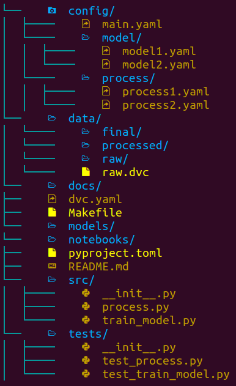
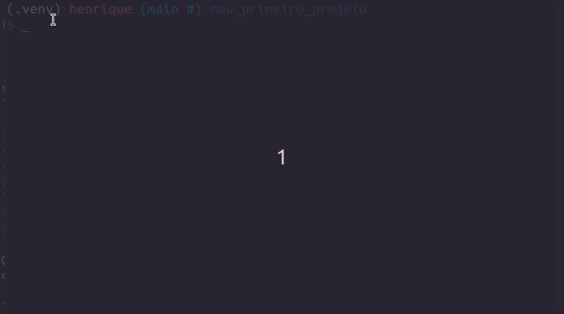
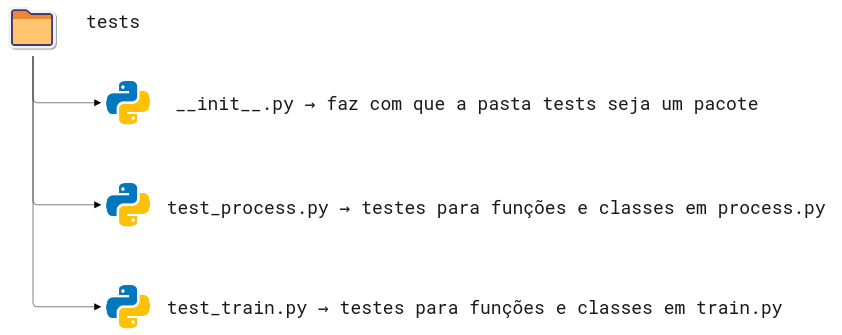
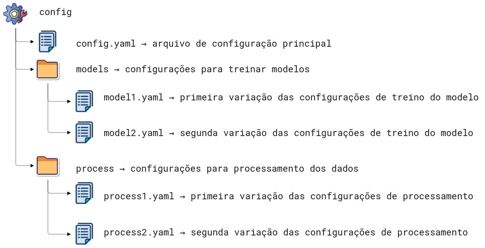
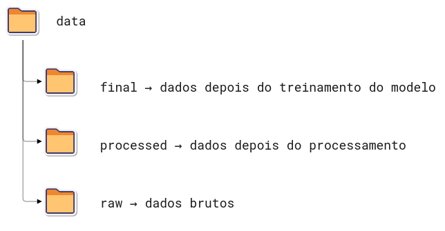
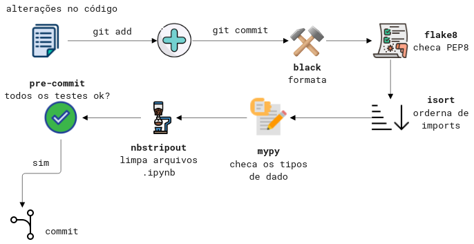

Como estruturar seu projeto de ciência de dados para aumentar a legibilidade e transparência
Contents
2.1. Como estruturar seu projeto de ciência de dados para aumentar a legibilidade e transparência¶
2.1.1. Motivação¶
É importante estruturar o seu projeto de ciência de dados baseado em algum padrão para que seus colegas de trabalho consigam facilmente manter e modificar o projeto.

Mas qual tipo de padrão você deve seguir? Não seria ideal se pudéssemos criar uma estrutura a partir de um modelo padrão (template)?
Existem alguns excelentes templates para projetos de ciência de dados, mas eles demonstram inexistência de algumas boas práticas como testes, configurações e formatação do código.
Por este motivo, a autora original do livro, Khuyen Tran, criou um repositório chamado data-science-template. Este repositório é resultado de anos de experiência dela refinando as melhores práticas para estruturar um projeto, deixando-o com maior reprodutibilidade e manutenibilidade.
Nesta seção iremos aprender a usar esse template para incorporar as melhores práticas ao fluxo de ciência de dados.
2.1.2. Mão na massa!¶
Para fazer download do template, comece instalando o cookiecutter:
pip install cookiecutter
Crie um projeto baseado no template:
cookiecutter https://github.com/khuyentran1401/data-science-template
…, e você será questionado de alguns detalhes do seu projeto, como:
Nome
Autor
Versão compatível do Python

Neste momento uma pasta com o nome fornecido acima será criada, e ela terá a seguinte estrutura:

As ferramentas usadas nesse template são:
Poetry: gerenciamento de pacotes e ambientes virtuais.
hydra: gerenciamento de arquivos de configuração.
plugins do pre-commit: automação na formatação e revisão do código.
DVC: versionamento de dados e experimentos.
pdoc: criação de documentação automática para a API do seu projeto.
Nas próximas seções, nós vamos aprender as funcionalidades destas ferramentas e arquivos.
2.1.3. Dependências e ambiente virtual¶
Este projeto usa o Poetry no lugar do pip para gerenciar as dependências. O motivo é porque o Poetry nos permite:
Separar as dependências principais das dependências indiretas em dois arquivos diferentes, ao invés de colocar todas elas em um único arquivo
requirements.txt.Criar arquivos de dependência mais legíveis.
Remover todas as dependências indiretas ao remover um pacote.
Evitar instalar novos pacotes que são conflitantes com aqueles preexistentes.
As instruções de instalação do Poetry estão neste link. Todas as dependências principais do projeto estão definidas no arquivo pyproject.toml. Para instalar todas as dependências, basta rodar no terminal:
poetry install
Comentário a parte do livro original:
No Windows há uma limitação do tamanho máximo de 256 caracteres que um caminho pode ter. É comum que ao se trabalhar com repositórios git e instalações de dependências os caminhos se tornem extensivamente grandes, levantando uma exceção no terminal. Para corrigir isso abra o PowerShell com privilégios de administrador e rode o comando:
New-ItemProperty -Path >"HKLM:\SYSTEM\CurrentControlSet\Control\FileSystem" ` -Name "LongPathsEnabled" -Value 1 -PropertyType DWORD >-ForceIsso alterará o valor da variável
LongPathsEnableddo Sistema de Arquivos para 1 (True).
Para adicionar um novo pacote do repositório PyPI, rode:
poetry add <nome-do-pacote>
Para remover um pacote:
poetry remove <nome-do-pacote>
Comentário a parte do livro original:
Como o Poetry lida com problema de otimização quando está resolvendo as dependências, ele pode ser mais lento do que o
pipdependendo da quantidade de pacotes.A própria documentação oficial do Poetry sabe desta deficiência, veja neste link.
Há também vários issues abertos referentes ao tema de lentidão do Poetry:
Se caso for necessário um build mais veloz, sugiro não utilizar o Poetry.
2.1.4. Makefile¶
O arquivo Makefile permite criar atalhos pequenos e legíveis para uma série de comandos. Você pode usar o Makefile para automatizar tarefas como, por exemplo, a preparação inicial do seu ambiente:
install:
@echo "Installing..."
poetry install
poetry run pre-commit install
activate:
@echo "Activating virtual environment"
poetry shell
initialize_git:
@echo "Initialize git"
git init
setup: initialize_git install
Comentário a parte do livro original:
Embora a autora não tenho mencionado no livro original, existem alternativas não oficiais para realizar essas automações com o
makeno Windows, pois omakenão é nativo deste sistema operacional. Em contrapartida, existe ojustque funciona de forma equivalente aomakee também funciona no Windows.
Quando qualquer pessoa pegar o projeto pela primeira vez, basta rodar os comandos abaixo para preparar todo o ambiente do projeto:
make activate
make setup

2.1.5. Código e testes¶
Todos os scripts Python são armazenados dentro da pasta src

Comentário a parte do livro original:
Eu particularmente não chamaria a pasta principal de
src, pois não é o padrão da linguagem Python. Por padrão, o pacote Python principal recebe o mesmo nome do projeto. Este padrãosrcmuito provavelmente é proveniente de outras linguagens de programação.
Todos os arquivos de testes estão armazenados na pasta tests. Ela deve ser um espelho da pasta src onde cada arquivo começa com o nome test seguido do nome do arquivo sendo testado.

2.1.6. Gerenciando arquivos de configurações com hydra¶
Um arquivo de configurações armazena todos os valores em um único arquivo, a fim de deixá-los separados e não escrevê-los diretamente no código. Neste template, todos os arquivos de configuração são armazenados na pasta config.

Hydra é um pacote da linguagem Python que permite acessar os parâmetros de configuração dos arquivos dentro de um script Python.
Por exemplo, se o seu config/main.yaml tiver o conteúdo abaixo:
raw:
path: data/raw/sample.csv
processed:
path: data/processed/processed.csv
final:
path: data/final/final.csv
…, podemos acessar os valores nesse arquivo de configuração usando o decorador @hydra.main em uma função específica. Dentro da função, podemos acessar os valores em processed e path usando a notação de ponto: config.processed.path.
"""
Este trecho de código demonstra de forma simples como acessar os parâmetros dentro da pasta config.
Autora do código: Khuyen Tran
Autor da tradução: Henrique Branco
"""
import hydra
from omegaconf import DictConfig
from hydra.utils import to_absolute_path as abspath
@hydra.main(config_path="../config", config_name='main')
def process_data(config: DictConfig):
"""Função para processar os dados"""
raw_path = abspath(config.raw.path)
print(f"Processando os dados com {raw_path}")
print(f"Colunas utilizadas: {config.process.use_columns}")
if __name__ == '__main__':
process_data()
Vamos aprofundar em maiores detalhes na seção sobre configurações.
2.1.7. Gerenciando modelos e dados com DVC¶
Todos os dados são armazenados na pasta data. Cada subpasta dentro de data armazena dados em diferentes estágios.

Todos os modelos são salvos na pasta model.
Sabendo que o git não é uma ferramenta propícia para versionamento de dados e arquivos binários (modelos), vamos usar o DVC - Data Version Control - para controlar o versionamento de nossos dados e modelos.
Começamos especificando as etapas no arquivo dvc.yaml. Cada etapa representa um processamento específico de dados, incluindo a entrada (deps) e a saída (outs).
stages:
process_data:
cmd: python src/process.py
deps:
- config/main.yaml
- config/process
- data/raw
- src/process.py
outs:
- data/processed:
persist: true
train_model:
cmd: python src/train_model.py
deps:
- config/main.yaml
- config/model
- data/processed
- src/train_model.py
outs:
- data/final:
persist: true
- models:
persist: true
Todas as pastas e arquivos abaixo de outs serão automaticamente rastreados e versionados pelo DVC.
Se você quiser executar as etapas definidas em stages, basta rodar no terminal
dvc repro
Fato interessante é que o DVC pula as etapas que não foram modificadas, e roda somente as etapas que foram alteradas, economizando tempo no processo de modelagem.

2.1.8. Armazenando seus dados de forma remota¶
O maior benefício no uso do DVC está no fato de ser possível armazenar dados em diversas plataformas, incluindo os serviços em nuvem. Você pode armazenar seus dados no DagsHub, Google Drive, Amazon S3, Azure Blob Storage, Google Cloud Storage, Aliyun OS, SSH, HDFS e HTTP.
dvc remote add -d remote <REMOTE-URL>
Depois de adicionar dados ao seu projeto local, você pode enviá-los para armazenamento remoto desta forma:
dvc push
Agora basta adicionar as outras informações ao git:
git add .
git commit -m 'mensagem de commit'
git push origin <BRANCH>
Vamos aprofundar em maiores detalhes sobre o DVC na seção sobre versionamento de dados.
2.1.9. Encontrando bugs no seu código antes de commitar¶
Quando vamos commitar um código, precisamos nos certificar que:
está bem formatado
está organizado
segue a padronização de estilo da PEP 8
inclui documentações nas funções e classes (docstrings)
No entanto, pode ser muito entediante e propenso a erro checar todos esses critérios antes de commitar o código. Para isso, contamos com a ferramenta pre-commit, que permite identificar estes detalhes antes de commitar o código.
Você consegue adicionar diferentes plugins ao seu pipeline do pre-commit. Uma vez que você commitou, todo o projeto passará por estas checagens. Caso alguma delas falhe, nenhum código será commitado.

Neste template, usamos 5 diferentes plugins, especificados em .pre-commit-config.yaml. São eles:
black - formata os scripts Python.
flake8 - checa a aderência à PEP8.
isort - ordena as importações de forma automática.
mypy - checa os tipos das variáveis de forma estática.
nbstrpout - limpa o
.jsondos arquivos Jupyter Notebooks.
Para adicionar o pre-commit aos hooks do git, rode no terminal:
pre-commit install
A partir de agora, quando você der um git commit, seu código passará por todas as verificações e correções, de forma automática.

Vamos aprofundar em maiores detalhes sobre pre-commit na seção sobre formatação de código.
2.1.10. Adicionando a documentação da API¶
Na ciência de dados, assim como em qualquer outra profissão, sempre há o trabalho em equipe. Portanto, é importante criar uma boa documentação para o seu projeto.
Para criar a documentação da API do seu projeto baseado nas docstrings dos seus scripts Python, vamos rodar:
make docs_view
Saída:
Save the output to docs...
pdoc src --http localhost:8080
Starting pdoc server on localhost:8080
pdoc server ready at http://localhost:8080
A documentação estará disponível em http://localhost:8080.
Para salvar a saída da documentação em formato markdown:
make docs_save
2.1.11. Conclusões¶
Você acabou de aprender a estruturar um projeto de ciência de dados usando um template. Este template traz uma flexibilidade extrema. Sinta-se à vontade para ajustá-lo baseado nas suas próprias aplicações.
E também pode brincar a vontade com o template data-science-template da autora Khuyen Tran.